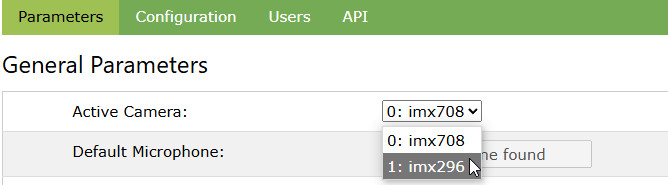

raspiCamSrv Settings

The Parameters section of the Settings screen is used for specification of general parameters.
Other sections focus on
Users and/or API may be invisible, depending on context.
For the case that no camera is connected, see Settings (No Camera).

The General Paramenters include
- Active Camera allows explicitely setting the active camera for systems with multiple cameras.
- Use USB Cameras, when activated will allow connected USB cameras to be used as Active or Second Camera (see also Multi Cam)
NOTE: When deactivating Use USB Cameras, make sure that none of the USB cameras is currently streaming. - Audio settings for systems with microphones if sound is to be recorded along with videos
- Path for Photos/Videos shows the path where media will be stored.
- File types for Photo, Raw Photo and Video
- Use Stereo Vision allows activating Stereo capabilities for systems having 2 non-USB cameras of the same type connected.
- Show Histograms allows activatig/deactivating Histograms display of histograms
- Ext. Motion Detection supported shows whether the actually installed libraries allow support of Extended Motion Tracking Algoritms
- Req. Auth for Streaming controls whether streaming requires authentication
- Allow access through API shows whether the installed libraries allow secure API access.
Also if it is supported, it can be deactivated. - The geo-coordinates Latitude, Longitute, Elevation as well as the Time Zone are required for sun-calculations in Sun-controlled Timelapse Photo Series.
Switching the active Camera
On systems which allow connection of multiple cameras (e.g. Pi 5), it is possible to switch the active camera.
Only non-USB cameras are offered for selection (see also Information)

Disabling Use of USB Cameras
If you have connected one or more USB cameras to a Raspberry Pi, you can exclude them from being available in raspiCamSrv.
They will still be shown in the Info screen but they are no longer offered as choice for camera selection in the Settings or Multi Cam screen.
If a USB camera was set as Active Camera or as Second Camera, this will be replaced by a CSI camera.
If no CSI cameras are present, the UI will switch to the "No-Camera" mode (Settings (No Camera)).
Configuring Authentication for Streaming
It can be configured whether streaming of videos or photos requires authentication:

- If the checkbox is not checked, the system allows access to video streams or photos for everybody without authentication.
- If the checkbox is checked, video streams or photos can only be accessed if a valid session is active.
If a streaming URL is entered in a browser and there is no valid Flask session, the login screen is shown and, after having entered valid credentials, the Live screen is shown. Now, the desired streaming URL can be directly entered or selected from the Web Cam screen.
A valid Flask session exists, if login has been passed once within an active browser instance, either in another tab of the browser window intended for streaming or within another window of the same browser.
Closing all windows of a browser kills the session.
Activating and Deactivating Stereo Vision
If your system has 2 non-USB cameras of the seme model connected, you can use these as stereo camera system.
raspiCamSrv supports basic stereo features such as 3D Videos and Depth Maps as well as Calibration and Rectification.
These features can only be activated if it has been recognized at system startup that 2 non-USB cameras of the same model are connected to the system.
In addition, it is required that OpenCV, and numpy are installed (see RaspiCamSrv Installation Step 11).
If any of these conditions is not met, the reason will be indicated:

NOTE: Stereo Vision should only be activated if both cameras are mounted (or at least arranged) in a typical stereo camera setup.
I am using a 3D-printed Raspberry Pi Camera 3 Stereo Case

Activating and Deactivating Histograms
raspiCamSrv can show histograms for photos.
Histograms are generated with OpenCV.
This requires that the packages OpenCV, numpy and matplotlib are installed (see RaspiCamSrv Installation Step 9)
If these packages are installed, you can select whether or not to Show Histograms.
The default on first server start is to show histograms.
It may be necessary on smaller systems (Raspberry Pi Zero W, Raspberry Pi Zero 2 W) to deactivate this option because of memory restrictions.
If the option is deactivated, the modules are not loaded and histograms will not be displayed, even if all packages are installed.
The system will automatically detect whether or not the required packages are installed and accessible. If this is not the case, this will be indicated:

Extended Motion Detection Support
In all installations, Motion Capturing with the Mean Square Difference algorithm are supported.
In order to also be able to use the extended algorithms, the following modules must be installed (see Installation procedure, Step 11):
- OpenCV
- numpy
- matplotlib
When the server starts up, it will be checked whether these modules can be imported.
If the import had failed, this will be indicated on the Settings screen in the same way as for Histograms, above.
Then, only the Mean Square Difference algorithm will be offered for choice on the Trigger/Motion tab.
Recording Audio along with Video
Preconditions
If a microphone, such as a USB microphone is connected to the Raspberry Pi, it is possible to record audio along with videos.
Picamera2 accesses the microphone through PulseAudio.
PulseAudio daemons (pulseaudio.socket and pulseaudio.service) are running as user units and not as system units.
In order to access the microphone, raspiCamSrv needs to run in the user environment, too.
This is automatically the case when the Flask service is directly started from the command line in the raspiCamSrv virtual environment with
flask --app raspiCamSrv run --debug --host=0.0.0.0
Alternatively, raspiCamSrv can be configured as user service as described in README / Service Configuration for Audio Support
Configuration
raspiCamSrv will automatically detect whether a microphone is connected and accessible through PulseAudio.
If this is the case, the default microphone will be shown in the Settings screen:

Also the checkbox Record Audio along with Video is enabled for change.
If the checkbox is checked, audio will be recorded when a video will be recorded.
If no microphone is connected or the microphone is not accessible through PulseAudio (because raspiCamSrv runs as system service), this will be indicated as

and the Record Audio along with Video checkbox is disabled.
Microphones can be plugged in/out without stopping the system. After a refresh of the Settings screen, the system will detect the changed setup.
If multiple microphones are plugged in, PulseAudio will automatically select a default microphone.
If the selected microphone is not the intended one, plug it out temporarily. Pulse Audio will automatically select another default and keep it.
Audio/Video Synchronization
Due to timing issues of audio and video subsystems, there may be a delay between video and audio.
The discrepancy is typically in subsecond range.
Test videos should be made with something like a clapperboard. In case of delays, the Audio Timeshift value should be adjusted (it can be positive or negative) until video and audio are in sync.
API Access
API access to raspiCamSrv is protected through JSON Web Tokens (JWT).
This requires the module flask_jwt_extended, which is first used in raspiCamSrv V2.11.
If the upgrade to this version has been done without installing this module (see Release Notes V2.11), the system will show a hint
 and also hide the API section
and also hide the API section
In this case, the module can be installed (see Release Notes V2.11) and after the server has been restarted, it shows as
 which now allows activating or deactivating API support.
which now allows activating or deactivating API support.
If the setting is changed, it is necessary to
- Store the configuration
- Make sure that the server is configured to Start with stored Configuration
- Restart the server (Button Restart Server in Settings/Configuration)
This will be indicated through the hint